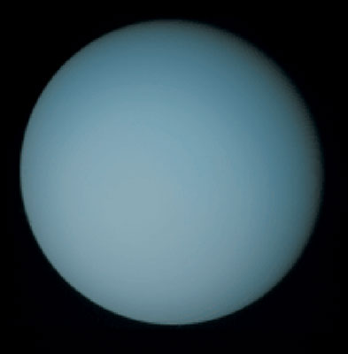

| Uranus is the seventh planet from the Sun. It is a gaseous cyan-coloured ice giant. Most of the planet is made of water, ammonia, and methane in a supercritical phase of matter, which astronomy calls "ice" or volatiles. The planet's atmosphere has a complex layered cloud structure and has the lowest minimum temperature (49 K (−224 °C; −371 °F)) of all the Solar System's planets. It has a marked axial tilt of 82.23° with a retrograde rotation period of 17 hours and 14 minutes. This means that in an 84-Earth-year orbital period around the Sun, its poles get around 42 years of continuous sunlight, followed by 42 years of continuous darkness. |